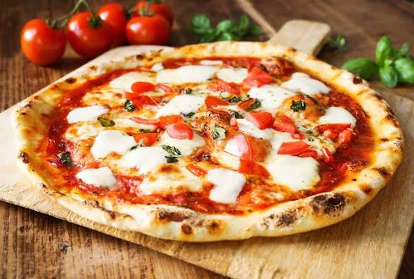

Pizza

Pizza is an Italian, specifically Neapolitan, dish typically consisting of a flat base of leavened wheat-based dough topped with tomato, cheese, and other ingredients, baked at a high temperature, traditionally in a wood-fired oven.
Ingredients
- Dough: Flour (preferably 00 flour or a combination of all-purpose and bread flour), water, salt, yeast, and a little olive oil.
- Sauce: Traditionally made with San Marzano tomatoes, known for their sweet flavor and low acidity. The sauce is simply crushed or pureed and seasoned with olive oil, salt, and optionally garlic and a touch of basil or oregano.
- Cheese: Fresh mozzarella is key, ideally mozzarella di bufala or a good quality fresh mozzarella packed in water, which offers a soft, creamy texture.
- Basil: Fresh basil leaves are added after baking, providing a vibrant, aromatic flavor and representing the green of the Italian flag.
- Olive Oil: A drizzle of extra virgin olive oil enhances the flavors and adds a touch of richness, according to 7-Eleven.
- Salt: A sprinkle of salt, preferably sea salt, helps bring out the flavors of the other ingredients.
Steps
- Prepare and preheat the oven
Place a pizza stone or baking steel in your oven and preheat to the highest setting your oven allows (typically around 500-550°F or 260-290°C) for at least 30-60 minutes to ensure it's thoroughly heated. According to Quora, high temperatures result in a great crispy crust while the toppings are not overcooked.
- Prepare the dough
While the oven preheats, lightly flour a work surface and shape your pizza dough into a round, leaving a slightly thicker edge for the crust.
If using a pizza peel, dust it with cornmeal to prevent the dough from sticking.
- Assemble the pizza
Brush or drizzle the dough lightly with olive oil.
Evenly spread your pizza sauce over the dough, leaving a border of about ½ to ¾ inch for the crust.
Sprinkle the pizza sauce with a little Parmesan cheese (optional).
Distribute the fresh mozzarella (cubed or thinly sliced) evenly over the pizza. Consider absorbing excess moisture from the mozzarella with a paper towel before adding it to prevent a watery pizza, especially if you slice it thinly.
- Bake the pizza
Carefully slide the prepared pizza onto the hot pizza stone or preheated baking sheet.
Bake for 8-14 minutes, depending on your oven and desired crispiness, or until the crust is golden brown and the cheese is melted and bubbly.
- Finish and serve
Remove the pizza from the oven and top with fresh basil leaves (torn or ribbons).
Drizzle with extra virgin olive oil and season with salt and pepper if desired.
Allow the pizza to cool for a few minutes before slicing and serving hot.
Enjoy your delicious homemade Margherita pizza!
Home